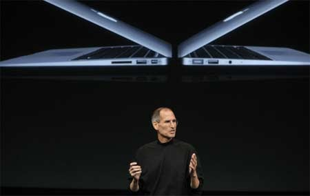
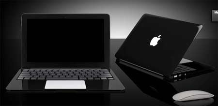

Siêu mẫu' MacBook Air mới sẽ ra mắt tuần sau
Hàng loạt thông tin về việc Apple chuẩn bị trình làng mẫu laptop siêu mỏng thế hệ mới
với
những cải tiến về bộ nhớ, tốc độ và kết nối liên tiếp xuất hiện những ngày qua.

Macbook Air thế hệ hai được steve jobs giới thiệu vào tháng 10/2010
ảnh: AllThingsD
Apple Insider
khẳng định MacBook Air sẽ có RAM nhân đôi từ 2 GB lên 4 GB nhằm khai thác
tối đa hiệu suất của hệ điều hành Mac OS Lion. Phiên bản 11,6 inch không còn dùng ổ
lưu trữ SSD
64 GB mà được thay bằng ổ 128 GB và 256 GB.
Trong khi đó,
AllThingsD
-
trang web thường đưa thông tin khá chính xác về các sản phẩm chưa ra
mắt của Apple
-
khẳng định MacBook Air sẽ xuất hiện vào tuần sau, tích hợp chip Sandy Bridge, cổng
Thunderbolt và bàn phím backlit.

MacBook đen la niềm mơ ước của khá nhiều tín đồ Apple.Ảnh minh họa:
Macrumors.
Trước đó, trang
Macrumors
tin rằng Macbook Air mới sẽ có thêm bản màu đen với giá cao hơn một chú
so với bản màu bạc. Tuy nhiên, không ít người tỏ ra nghi ngờ trước thông tin
này bởi vỏ máy đen thườn
lộ dấu vân tay và đó là một trong những lý do Apple chưa từng công bố MacBook Air hay MacBook Pr
màu đen